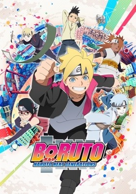
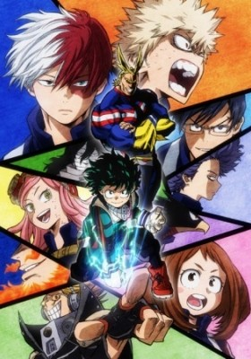
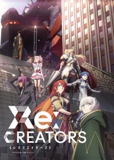
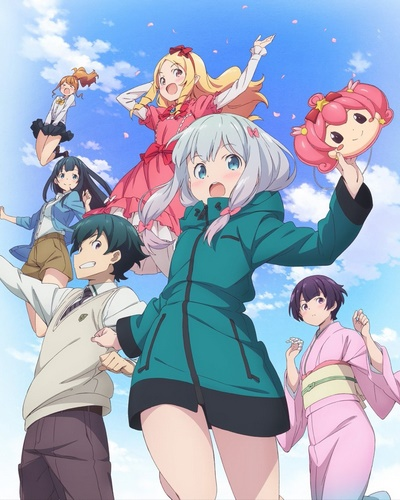

MOST POPULAR
-
 Shingeki no Kyojin 2nd Season (Sub)
Shingeki no Kyojin 2nd Season (Sub)
Genres:Action,Drama,Fantasy,Shounen,Super Power
Latest:Episode 037
-
 Dragon Ball Super (Sub)
Dragon Ball Super (Sub)
Genres:Action,Comedy,Martial Arts,Shounen,Super Power
Latest:Episode 095
-

Boruto: Naruto Next Generations (Sub)
Genres:Action,Adventure,Martial Arts,Shounen,Super Power
Latest:Episode 012
-

Boku no Hero Academia 2nd Season (Sub)
Genres:Action,Comedy,School,Shounen,Super Power
Latest:Episode 026
-
 The King's Avatar
The King's Avatar
Genres:Action,Adventure,Comedy,Game
Latest:Episode 012
-
 Naruto Shippuuden (Sub)
Naruto Shippuuden (Sub)
Genres:Action,Comedy,Martial Arts,Shounen,Super Power
Latest:Episode 500
-

Re:Creators
Latest:Episode 012
-
 Zero kara Hajimeru Mahou no Sho
Zero kara Hajimeru Mahou no Sho
Latest:Episode 012
-
 Busou Shoujo Machiavellianism
Busou Shoujo Machiavellianism
Latest:Episode 012
-

Eromanga-sensei
Latest:Episode 012
RECENTLY ADDED
- Legend of Sirius (Dub)
- Kurenai no Buta (Dub)
- Prince of Stride: Alternative (Dub)
- Alice to Zouroku Special
- Kuragehime (Dub)
- Koi☆Sento (Dub)
- Petite Princess Yucie (Dub)
- Witch Hunter Robin (Dub
- Ai Mai Mii: Surgical Friends
- Elsword: El Lady
- Fate/Grand Order: First Order
- The Place Promised in Our Early Days (Dub)
- Detective Conan Movie 03: The Last Wizard of the Century (Dub)
- Tenpou Ibun Ayakashi Ayashi Inferno OVA (Dub)
- Strike the Blood II
- Shakugan no Shana (Dub)
- Shinigami no Ballad (Dub)
- Medabots Spirits (Dub)
- Chiryokumaru
- Digimon Adventure (Dub)
- Fruits Basket (Dub)
- Shelter
- Fairy Tail (2014) (Dub)
- Ao Oni: The Animation
- Fune wo Amu
- Black God (Dub)
- Digimon Adventure tri. 3: Kokuhaku
- Dream Festival!
- Pokemon: Black & White (Dub)
- Dragon Ball Z (Dub)
- Soushin Shoujo Matoi: Kabushiki Gaisha Knight Busters
- Grimm Douwa: Kin no Tori